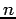

For convenience, Alchemy provides three additional operators: *, + and !. When predicates in a formula are preceded by *, Alchemy considers all possible ways in which * can be replaced by !, e.g., *student(x) ^ *professor(x) is expanded into four formulas:
The + operator makes it possible to learn ``per constant'' weights. When a variable in a formula is preceded by +, a separate weight is learned for each formula obtained by grounding that variable to one of its values. For example, if the input formula is hasPosition(x,+y), a separate weight is learned for the three formulas:
The ! operator allows you to specify variables that have mutually exclusive and exhaustive values. For example, if the input formula is hasPosition(x, y!), this means that any person has exactly one position (all groundings for this person build one block). This constraint is enforced when performing inference and learning: it is guaranteed that exactly one grounding per block is true. Note that the ! appears after a variable. ! can only be used in a formula with exactly one non-negated predicate, and can be applied to any number of the predicate's variables.
You can include comments in the .mln file with // and /* */ like in C++.
The characters @ and $ are reserved and should not be used. Due to the internal processing of functions, variable names should not start with funcVar and predicate names should not start with isReturnValueOf.
A formula in an .mln file can be preceded by a number representing the weight of the formula. A formula can also be terminated by a period (.), indicating that it is a hard formula. However, a formula cannot have both a weight and a period. In a formula, you can have a line break after =>, <=>, ^ and v.
A legal identifier is a sequence of alphanumeric characters plus the characters - (hyphen), _ (underscore), and ' (prime); ' cannot be the first character. Variables in formulas must begin with a lowercase letter, and constants must begin with an uppercase one. Constants may also be expressed as strings (e.g., Alice and "A Course in Logic" are both acceptable as constants).
Alchemy converts input formulas into CNF. This means that a conjunction of  conjuncts in a formula results in formulas. In an effort to preserve the original formula as much as possible, Alchemy keeps all single literals in a conjunction together by negating the formula: the weight is negated and the formula becomes a disjunction of the negated literals. For instance, the formula
2.5 P(x) ^ Q(x) ^ (R(x) v S(x))
results in the two formulas
-1.25 !P(x) v !Q(x) and
1.25 R(x) v S(x).
In a future version of Alchemy, the user will be able to specify which parts of a formula are indivisible.
Note that Alchemy does not use Skolemization to remove existential
quantifiers when converting a formula to CNF. Instead, it replaces
existentially quantified subformulas by disjunctions of all their
groundings. (Skolemization is sound for resolution, but not sound in
general.) For example, when there are only two constants Alice
and Bob, the formula
EXIST x,y advisedBy(x,y) becomes: advisedBy(Alice,Alice) v
advisedBy(Alice,Bob) v
advisedBy(Bob,Alice) v advisedBy(Bob,Bob).
This may result in very large CNF formulas, and existential quantifiers
(or negated universal quantifiers) should be used with care.
Types and constants can be declared in an .mln file with the following syntax: <typename> = { <constant1>, <constant2>, ... }, e.g., person = { Alice, Bob }. You can also declare integer types, e.g., ageOfStudent = { 18, ..., 22 }. You may have a line break between constants. Each declared type must have at least one constant. A constant is considered to be declared the first time it is encountered in a type declaration, a formula, or a ground atom (in a.db file).
You can include other .mln files in a .mln file with the "#include" keyword. For example, you can include formulas about a university domain in your .mln file about a company domain with #include "university.mln".
The executables will print out error messages when they encounter syntax or semantic errors. Each message will indicate the line and column number of the error (lines start from 1 and columns from 0). An error may not be exactly at the indicated column but near it, and an error may also be a result of previous ones (much like compiler error messages).
Predicates and functions play a large role in Alchemy and this topic (including syntax) is covered extensively in the next section.